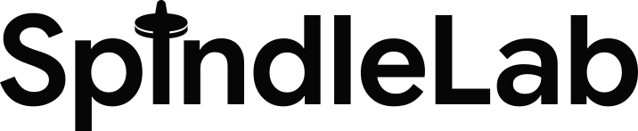
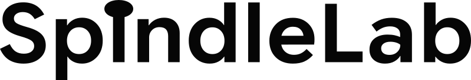

Grande · desde 40 px de alto · la tortera con su canto y su filete · Google Sans Flex wght 600

 SpindleLab · EstudioSpindleLab · Estudio
SpindleLab · EstudioSpindleLab · Estudio


Monocromo: blanco sobre #060606 y #060606 sobre blanco, 20,26:1 en los dos. Sin oro y sin otro color (pregunta 10, por defecto). Contornos hechos desde la letra, sin cargar ninguna fuente. Google Sans Flex: SIL OFL 1.1, Copyright 2015 The Google Sans Flex Authors (OFL-google-sans-flex.txt).
La tortera, probada: cuatro dibujos, dos lectores fríos cada uno, sin contexto ni herramientas. El elegido se leyó primero como una torre, los dos con seguridad alta; seta, chinche y clavo, con seguridad baja o media; la cerradura, nunca. A 16 px vieron una cruz chica o un alfiler: por eso el favicon de 16 va dibujado aparte y el corte pequeño no lleva punta (prueba-tortera/).